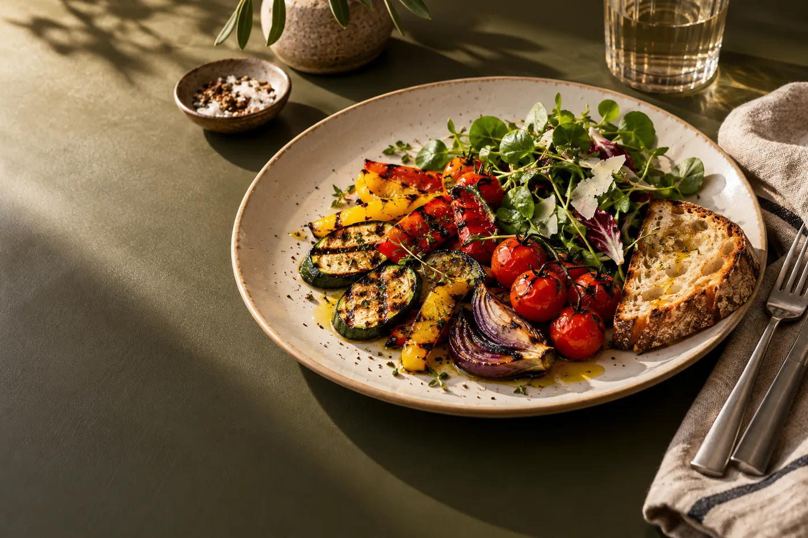
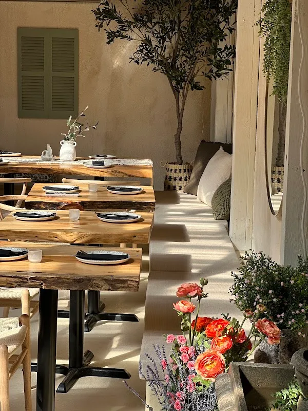
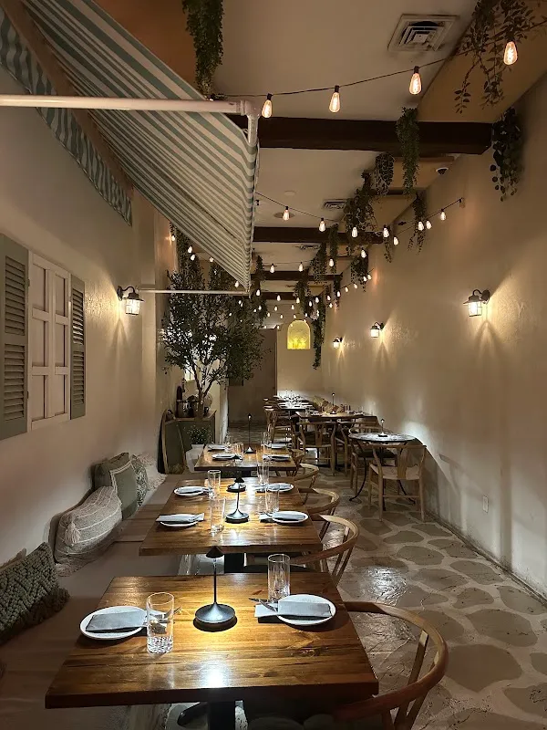

A place at
Ambrosia Garden
A restaurant in Queens. Explore a sample menu collection and speak with Ambrosia Garden about the current menu.
Explore the menu collection →29-11 23rd Ave, Astoria, NY 11105

Start at the table
Choose a part of the sample menu, then confirm the restaurant’s actual dishes, prices and ingredients.
To startExplore the sample collection, then ask the store about the current range and availability.
Explore to start →Demo selection. Confirm products, prices and availability with the store.
The garden table
Menu studies demonstrate a clear home for dish descriptions, portion sizes and availability.



Visit Ambrosia Garden
Ambrosia Garden is at 29-11 23rd Ave, Astoria, NY 11105. Explore the business photographs, then plan a visit or call to ask about the current selection.
Plan your visit →